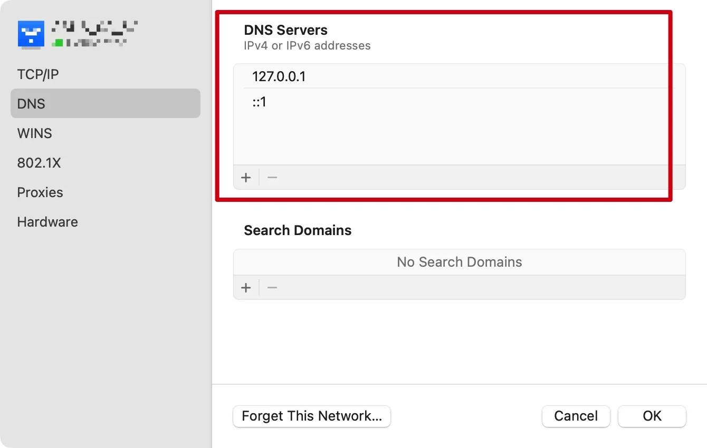

详尽版 DNS-over-HTTPS 配置参考：macOS 配置 DNS-over-HTTPS。
简化版DoH只需要安装mosdns以及dnscrypt-proxy，不需要cloudflared以及AdGuardHome。mosdns负责分流以及国内连接，端口设置为53；dnscrypt-proxy负责国外网络连接，端口设置为5300。
mosdns设置
从Github下载安装https://github.com/IrineSistiana/mosdns。
解压缩后将整个文件夹移至/opt/local/etc/，并修改配置文件/opt/local/etc/config.yaml：
log:
level: info
file: "/opt/local/etc/mosdns/log.log"
plugins:
# 缓存
- tag: cache
type: cache
args:
size: 10240
lazy_cache_ttl: 86400
# 转发至国内DNS，并发查询
- tag: forward_local
type: forward
args:
upstreams:
- addr: "https://223.5.5.5/dns-query"
- addr: "https://doh.pub/dns-query"
# enable_http3: true
# 转发至国外DNS，并发查询
- tag: forward_remote
type: forward
args:
upstreams:
- addr: "tcp://127.0.0.1:5300"
- addr: "udp://127.0.0.1:5300"
# china ip和自己的vps ip
- tag: local_ip
type: ip_set
args:
files:
- /opt/local/etc/mosdns/china_ip_list.txt
# fallback的primary服务器,返回非国内ip则drop_resp
- tag: local_sequence
type: sequence
args:
- exec: $forward_local
- matches: "!resp_ip $local_ip"
exec: accept
- exec: drop_resp
# fallback的secondary服务器,返回非国内ip则添加至ipset,返回国内ip只接受不会添加ipset
- tag: remote_sequence
type: sequence
args:
- exec: $forward_remote
- matches: "!resp_ip $local_ip"
exec: ipset gfwlist,inet,24
- exec: accept
# fallback sequence
- tag: fallback
type: fallback
args:
primary: local_sequence
secondary: remote_sequence
threshold: 500
always_standby: true
# gfwlist解析出的ip添加至ipset，添加前先判断是否为国内ip或内网ip
- tag: gfw-list
type: sequence
args:
- exec: ttl 300-3600
- matches: "!resp_ip $local_ip"
exec: ipset gfwlist,inet,24
- exec: accept
# 主运行序列
- tag: main_sequence
type: sequence
args:
- matches: qtype 65
exec: reject 3
# 屏蔽广告
- matches: qname &/opt/local/etc/mosdns/reject-list.txt
exec: reject
# - exec: prefer_ipv4
# 动态域名跳过缓存
- matches: "!qname 00006801.com"
exec: $cache
- matches: has_resp
exec: accept
# 国内域名
- matches: qname &/opt/local/etc/mosdns/direct-list.txt &/opt/local/etc/mosdns/apple-cn.txt &/opt/local/etc/mosdns/self-defined.txt
exec: $forward_local
- matches: has_resp
exec: accept
# 国外域名
- matches: qname &/opt/local/etc/mosdns/proxy-list.txt
exec: $forward_remote
- matches: has_resp
exec: goto gfw-list
# 其他未知域名
- exec: $fallback
# 启动监听服务
- tag: udp_server
type: udp_server
args:
entry: main_sequence
listen: "127.0.0.1:53"
- tag: tcp_server
type: tcp_server
args:
entry: main_sequence
listen: "127.0.0.1:53"
部分文件来源：
安装mosdns前检查配置是否正确：
$ /opt/local/etc/mosdns/mosdns start -c /opt/local/etc/mosdns/config.yaml
安装mosdns服务：
格式如下：mosdns service install -d 工作目录绝对路径 -c 配置文件路径。
$ sudo /opt/local/etc/mosdns/mosdns service install -d /opt/local/etc/mosdns/ -c /opt/local/etc/mosdns/config.yaml
运行后将生成启动配置文件/Library/LaunchDaemons/mosdns.plist，该服务将设定mosdns随系统启动，但并不会立刻运行。
修改mosdns服务：
$ vim /Library/LaunchDaemons/mosdns.plist
修改RunAtLoad的值为true。
启动mosdns：
$ sudo /opt/local/etc/mosdns/mosdns service start
检查mosdns是否正常启动：
$ sudo lsof -Pni UDP:53
管理mosdns服务：
$ sudo /opt/local/etc/mosdns/mosdns service start/restart/stop/uninstall
dnscrypt-proxy设置
安装dnscrypt-proxy：
$ brew install dnscrypt-proxy
安装后会自动生成启动配置文件/Library/LaunchDaemons/dnscrypt-proxy.plist。
修改配置文件中的部分内容：/opt/homebrew/etc/dnscrypt-proxy.toml：
#自由添加server_names
server_names = ['cloudflare','cloudflare-ipv6','libredns','jp.tiar.app-doh', 'doh-crypto-sx', 'uncensoreddns-ipv6', 'cisco']
listen_addresses = ['127.0.0.1:5300', '[::1]:5300']
ipv4_servers = false
ipv6_servers = false
dnscrypt_servers = true
doh_servers = true
odoh_servers = true
require_dnssec = false
require_nolog = false
disabled_server_names = ['alidns-doh','dnspod','tuna-doh-ipv6']
启动dnscrypt-proxy服务：
$ sudo brew services start dnscrypt-proxy
备注：这里需要使用sudo命令，目的是为了避免在用户目录下出现重复的配置文件，否则将不断提醒端口占用。
检查dnscrypt-proxy是否正常启动：
$ sudo lsof -Pni UDP:5300
管理dnscrypt-proxy服务：
$ sudo brew services start/restart/stop dnscrypt-proxy
开机启动
开机启动mosdns：
$ sudo launchctl load -w /Library/LaunchDaemons/mosdns.plist
开机启动dnscrypt-proxy：
$ sudo launchctl load -w /Library/LaunchDaemons/dnscrypt-proxy.plist
系统设置：
进入WiFi详细界面，在DNS服务器栏中分别填入127.0.0.1以及::1，保存即可。
